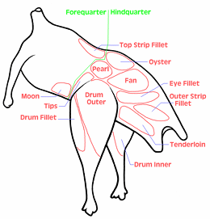
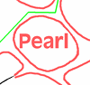
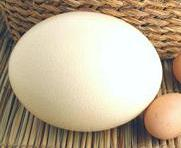
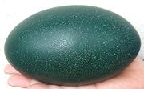

SAFARI
Users
- General and History
- Cooking Ostrich & Emu
- Cuts of Ostrich & Emu
- Ostrich & Emu Eggs - various forms.
General and History
Ostriches, native to Africa, can grow to as much as 350 pounds and 9 feet tall. Emus, native to Australia, are smaller, growing only to 130 pounds or so. Unfortunately, much larger birds (up to about 880 pounds and over 12 feet tall) were hunted to extinction by the natives of Madagascar and New Zealand between 1500 and 1700.
Ostrich and Emus have wings that are small and weak and have no breast bone keel to attach strong breast muscles to. This does not mean the wings are useless, they are very important. Cheetahs are the most dangerous predator for ostriches. An ostrich can run about 45 miles per hour, but cheetahs are considerably faster - yet their kill ratio is low. In a pursuit, as the cheetah closes in, the ostrich will spread its wings and uses them as airfoils to execute a turn too sharp for the cheetah to follow. Cheetahs have only short endurance at speed, and the chase is often over. Other predators rely on ambush because they can't run fast enough, but ostriches have been known to kill lions with a single kick.
Ostrich farming has been a very uncertain business. In most places it has been a sort of pyramid scheme, with the early entries making a huge amount of money selling breeding pairs at high prices. Once the market for breeders is saturated, most farms go out of business. Namibia, Brazil and Israel invested very heavily in ostrich farming, and crashed out on grounds of profitability - and in Israel ostrich and crocodile are now illegal to farm - not kosher.
South Africa has been the largest producer since the late 1800s, and has plenty of low cost labor available, but even there it's been up and down. In 1990 there were over a million ostriches on South African farms, and in 2012, 250,000, with the industry threatened by extinction from bird flu (not the deadly Asian variety).
North America is a relatively stable producer, but again, relative to what? Australia went into ostriches in a big way back around 1990, but profitability has been highly ellusive and most smaller operators are gone. Remaining operators have shifted to optimizing for hides rather than meat.
Cooking Ostrich & Emu
While Ostrich may look and taste a lot like beef, its lack of fat makes it quite different for cooking.
- Thigh Cuts: These need to be cooked over high heat, very quickly, preferably to medium rare - medium is risky and beyond that it is ruined. On the plus side, a patty of ground ostrich will have very little shrink during cooking - again because of the lack of fat. Because of the quick cooking, ostrich cuts are usually sliced fairly thin for grilling, broiling or pan frying. Thigh cuts are also good cut into strips and used for stir fry dishes, and cubed for kebabs. For stir fries, fry stirring only until the raw color is gone, then remove and set aside. When everything else is done, stir the meat back in until warmed through and serve.
- Drum Cuts: The legs provide the toughest cuts and are best used for slow cooking with plenty of liquid, in soups and stews. The Drum Fillet is a bit less tough than the Inside Drum and Outside Drum.
Cuts of Ostrich & Emu
 These birds are not parted out into whole joints as turkeys are, because of size. A 6 pound drumstick is just a little too big for the plate. Instead, these birds are disassembled into separate muscles. This increases the cost of processing, you can't just dump the bird in a shrink bag and send it to the market. It does make cooking more convenient, as there are no bones to deal with at the consumer level.
A significant amount of meat cannot be recovered as cuts, so it is used to produce ground ostrich meat and ostrich sausages, which sell at a significantly lower price per pound than the cuts.
At this time, naming of the cuts is not well standardized, and differs some among North America, Australia and South Africa. Click on Image for larger.
The drawings below will be replaced with photos as time and
opportunity allows.
| Forequarter | There are two significant cuts near the thigh, but the rest of the forequarter has little meat, though people who have access to whole forequarters do roast them and pick off the meat there is. |
|---|---|
| Top Strip | This cut is found along the backbone just above the forward edge of the thigh. It weighs about 1 pound 12 ounces for ostrich. |
| Moon | This is a substantial cut found on the Forequarter just forward of the thigh. it weighs about 14 ounces for ostrich. |
| Wing Drumette |
The wing drumette has little recoverable meat on it and is seldom sold as a retail cut. The ostrich / emu breastbone is flat and unsuitable for attachment of strong wing muscles. |
| Neck | The neck is very long and thin with little meat. It is sometimes sold to food processors. |
| Thigh | The thigh, located at the top front of the hindquarter, is the meatiest part of the bird, containing a number of substantial muscles suitable for slicing into steaks. These cuts are more tender than those of the Drum, but overcooking must be carefully avoided. |
|---|---|
| Oyster | This egg shaped cut is found along the backbone just above the thigh. As on chicken and turkey, it is considered a choice cut. It weighs about 7 ounces for ostrich. |
| Pearl Round |
 This is a substantial cut from the center of the thigh, weighing about 9-1/2 ounces. This cut is often cut into steaks for pan frying or quick roasting. |
| Fan | This is the largest cut in the thigh and the most sought after cut on the bird. It weighs about 3-3/4 pounds for ostrich. It is most often sliced into steaks and pan fried or grilled. |
| Eye Fillet | A fairly substantial flat cut at the back of the thigh, weighing about 1-1/4 pounds for ostrich. |
| Tips Tip Steak |
I currently have no information on this cut. |
| Hindquarter | There are a couple more cuts on the hindquarter that are not part of the thigh, but behind it. |
|---|---|
| Outside Strip Fillet |
This cut is substantial enough for slicing into steaks, weighing about 1-1/3 pounds for ostrich. |
| Tenderloin | This is a substantial cut from the bottom of the hindquarter, and is sufficient for slicing into steaks. It weighs about 1-7/8 pounds for ostrich. |
| Drum | Weighing about 6 pounds, ostrich drumsticks are too large for the plate and are separated into individual muscles. Tendons and tough membranes must be removed before cooking, and these tough cuts are better for long wet cooking than for frying, grilling or broiling. |
|---|---|
| Drum, Outer |
This large muscle weighs about 2 pounds for ostrich. |
| Drum, Inner |
This muscle from the inside of the leg weighs a little more than 1-3/4 pounds for Ostrich. |
| Drum, Fillet |
This is the muscle at the front of the leg which draws the leg forward. as with other animals, it is more tender than the muscles that drive the leg back, but it's still not real tender. It weighs about 1-1/4 pounds for ostrich. |
| Whole Bird | Unfortunately, an ostrich or emu carcass does not divide completely into neat "cuts". There is a lot of miscellaneous meat that can only be ground up for use. |
|---|---|
| Ground Ostrich | A fair amount of ground ostrich is generated from each bird dismantled, and this can be purchased as bulk ground or as formed hamburger patties. The price per pound is substantially less than for the coherent cuts. These must not be overcooked, but they exhibit much less shrink than beef patties. |
| Sausage | These are available in a number of forms, including ostrich hot dogs (which may be 100% ostrich or include some beef and pork, depending on manufacturer). They are not as low cost as ground ostrich but are still substantially less than the coherent cuts. |
| Eggs | As fitting for such large birds, their eggs are very large, but are not as large in proportion to body size as for other birds. They can, of course, be cooked, but are most valuable empty, for sale to crafts people who carve them in various designs. |
|---|---|
| Ostrich Egg |  Ostrich eggs are a light cream color, typically 5.9 inches long and 5.1 inches diameter, weighing about 3.1 pounds. Photo © i0037 . |
| Emu Egg |  Emu eggs are a dark blue-green, typically 5.3 inches long and 3.5 inches diameter, weighing between 1-1/2 and 2 pounds. The shell is about 0.04 inches (1 mm) thick. Photo by Shuhari distributed under license Creative Commons Attribution-ShareAlike v3.0 Unported. |